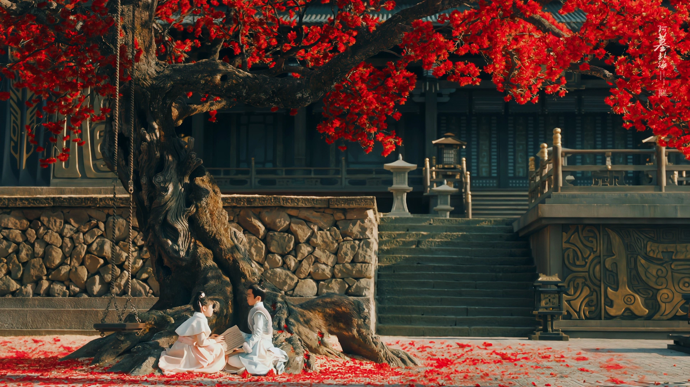

长相思
2023年杨紫、张晚意主演的电视剧
- 

《长相思》是由杨紫、张晚意、邓为、代露娃、王弘毅领衔主演，檀健次特别主演， 秦榛、杨欢执导，桐华担任编剧的电视剧，于2023年7月24日在腾讯视频播出。
该剧改编自桐华同名小说，主要讲述了小夭（杨紫 饰）与玱玹（张晚意 饰）、涂山璟（邓为 饰）、 赤水丰隆（王弘毅 饰）、相柳（檀健次 饰）的恩怨情仇故事。
截至2023年8月2日，《长相思》热度破33000，创腾讯视频2023剧集最高新纪录， 成为腾讯视频2023年热度值最高剧集。